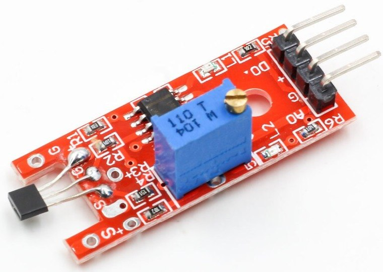
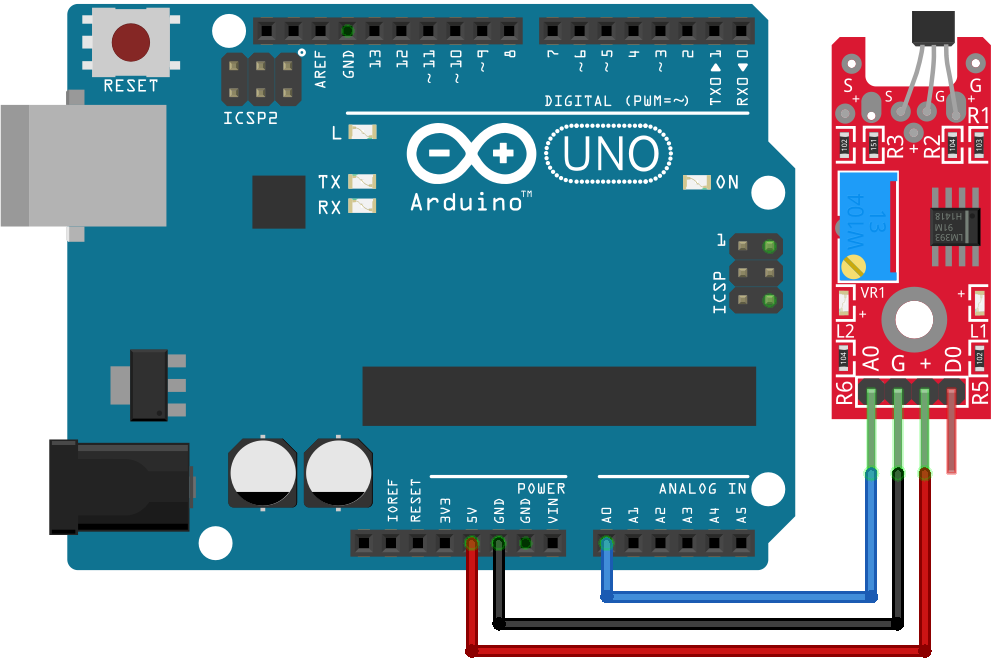

Модуль датчика магнитного поля KY-024
Модуль KY-024 является цифроаналоговым датчиком Холла. Модуль определяет присутствие поля постоянного магнита или магнитного поля катушки подключенной к постоянному току. На модуле KY-024 установлен датчик Холла – датчик магнитного поля. Также на модуле расположены два красных светодиода, один из которых, сигнализирует о наличии питания, другой загорается при срабатывании датчика. Для настройки датчика на плате модуля имеется подстроечный резистор. Им можно отрегулировать чувствительность датчика, то есть изменить расстояния до магнита, при котором датчик сработает.
Наиболее часто применяется для определения скорости вращения различных деталей механизмов. Модуль датчика Холла (линейный) KY-024 используется в приборах бытового, учебного и развлекательного назначения. Возможно применение как наглядного пособия для ознакомления с эффектом Холла.
Датчик температуры KY-024 имеет два выхода: один цифровой, другой – аналоговый. Их можно использовать как одновременно, так и по отдельности. Цифровой выход выдаёт логический 0 если магнита рядом нет и логическую 1, если магнит в поле чувствительности датчика. А на аналоговом выходе можно отслеживать изменение напряжения, когда магнитное поле есть и когда его нет.

Воспринимающий элемент модуля – микросхема датчик Холла SS49E. Она соединена со входом компаратора на микросхеме LM393YD. С помощью подстроечного резистора выполняется установка порога срабатывания компаратора. При этом устанавливается чувствительность датчика магнитного поля. При воздействии поля напряженностью более чем установлена при настройке на выходе D0 меняется уровень напряжения. На аналоговый выход поступает усиленный сигнал воспринимающего элемента.
Светодиод L1 показывает включение питания. L2 светится постоянно и гаснет при срабатывании датчика на магнитное поле установленной напряженности. При настройке порога чувствительности помогает светодиод L2, можно обойтись без вольтметра для напряжения выхода.
Технические характеристики модуля KY-024:
- напряжение питания — 3,3...5,5 В;
- рабочая температура — 0...+70°C.
Назначение выводов представлено в таблице 1.
Таблица 1
| Контакт | Назначение |
|---|---|
| A0 | Аналоговый выход. Напряжение сигнала этого выхода соответствует напряженности магнитного поля. |
| D0 | Цифровой выход |
| + | +5В |
| GND | Общий (GND) |

Источники
zi-zi.ru - Модуль датчика Холла (линейный)
funnydiy - Датчик магнитного поля. Модуль KY-024 для Ардуино. Обзор.